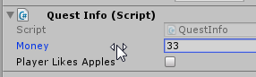
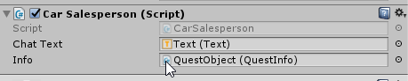

Making games with Unity
Click on an NPC to interact
Text appears on the screen
A simple inventory \ global state system
ALIEN CASENO by Grace Bruxner
If you don't already have a basic scene with a player, let's make one:
Make an empty scene
Add a Plane to start on
Import the standard characters and add a First Person Controller
Remember to delete the Main Camera
Test: You can run around the simple scene
Add our NPCs: Cubey the Car Dealer and Capsule the Shopkeeper
Add the 3D objects and rename them
Put them close to the First Person Controller so you can test quickly.
When the player clicks:
We draw a 3D line out from the middle of the camera and record what it hits.
If it hits something tagged 'Clickable', we send a message to that object.
We'll write it step by step.
Add a new script to the First Person Controller
void Update () {
if (Input.GetMouseButtonDown(0)) {
print ("Click detected!");
}
}
Reference: Unity Docs
void Update () {
if (Input.GetMouseButtonDown(0)) {
RaycastHit hitInfo = new RaycastHit ();
Vector3 middleOfScreen = new Vector3 (0.5f, 0.5f, 0f);
Ray ray = Camera.main.ViewportPointToRay(middleOfScreen);
bool isHit = Physics.Raycast (ray, out hitInfo);
print(hitInfo.collider);
}
}
Reference: Unity Docs
Now we need to tag clickable game objects with the tag 'Clickable'. And we'll send them a message.
void Update () {
if (Input.GetMouseButtonDown(0)) {
RaycastHit hitInfo = new RaycastHit ();
Vector3 middleOfScreen = new Vector3 (0.5f, 0.5f, 0f);
Ray ray = Camera.main.ViewportPointToRay(middleOfScreen);
bool isHit = Physics.Raycast (ray, out hitInfo);
if (isHit && hitInfo.collider.gameObject.tag.Equals ("Clickable")) {
print ("Clickable!");
hitInfo.collider.gameObject.SendMessage("Click");
} else {
print ("Not clickable");
}
}
}
Reference: Unity Docs
1. Must be tagged 'Clickable'. This is how our clicking script knows that they are clickable.
2. Must have a script with a function called Click. This function will run when they are clicked, because we call it using SendMessage.
void Click() {
print("You clicked me"); //just a test
}
using UnityEngine.UI;
public class CarDealer : MonoBehaviour {
public Text chatText;
void Start () {
chatText.text = "";
}
void Click () {
chatText.text = "I am a car dealer!";
}
}
Add a Text to the scene. Drag it into the chatText slot of this script.
We use a coroutine to make the text appear then disappear. Coroutines are functions that can stop and wait, then come back later.
using UnityEngine.UI;
public class CarDealer : MonoBehaviour {
public Text chatText;
void Start () {
chatText.text = "";
}
void Click () {
StartCoroutine (WelcomeConvo ());
}
IEnumerator WelcomeConvo () {
chatText.text = "I am a car dealer!";
yield return new WaitForSeconds (2);
chatText.text = "";
}
}
We want every script to have access to some shared information:
1. How much money the player has
2. Does the player character like apples or bananas the most?
Create an empty game object in the scene. Name it 'QuestObject'. Add a script named QuestInfo. Give the script these public variables (and no functions)
public class QuestInfo : MonoBehaviour {
public int Money;
public bool PlayerLikesApples;
}You can change the values in the Unity editor, to help test things quicky:
Let the Car Dealer know about QuestInfo. Add this to the Car Dealer code:
...
public QuestInfo questInfo;
}Drag the QuestObject in to the slot, so it knows where to find the information:
We can now use those variables in our car dealer class:
IEnumerator WelcomeConvo () {
if (questInfo.Money > 10) {
chatText.text = "Want to buy a car?";
yield return new WaitForSeconds (2);
chatText.text = "";
} else {
chatText.text = "Come back when you have $10.";
yield return new WaitForSeconds (2);
chatText.text = "";
}
}
I get tired of dragging QuestInfo object into every script that needs QuestInfo. Let's make them link up automatically!
//Replace the word 'public' with 'private'
private QuestInfo questInfo;
void Start () {
//automatically link up at the start of the game:
questInfo = FindObjectOfType(typeof(QuestInfo));
}